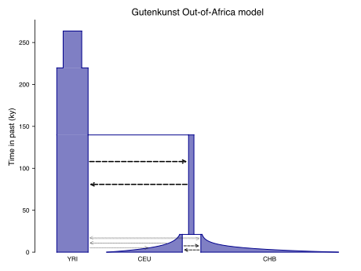

Demographic models¶
By default, msprime assumes a single randomly mating population of a fixed size for ancestry simulations, which is unrealistic for most purposes. To enable more realistic and complex simulations, msprime models population structure by defining a set of discrete Populations, with Migration between these populations occurring at different rates. Populations and their parameters can change over time, via demographic events. Please see the Definitions section for mathematical details.
The information required to define a demographic model is encapsulated
by the Demography object. To run
ancestry simulations for a given demography
we use the demography parameter to sim_ancestry() and define
what populations our samples are drawn from.
For example, here we create a three-population model in which
populations A and B split from C 1000 generations ago.
We then run an ancestry simulation based on this demography;
here we draw one diploid sample each from A and B at time zero:
demography = msprime.Demography()
demography.add_population(name="A", initial_size=10_000)
demography.add_population(name="B", initial_size=5_000)
demography.add_population(name="C", initial_size=1_000)
demography.add_population_split(time=1000, derived=["A", "B"], ancestral="C")
ts = msprime.sim_ancestry(samples={"A": 1, "B": 1}, demography=demography, random_seed=12)
ts
|
|
|
|---|---|
| Trees | 1 |
| Sequence Length | 1.0 |
| Sample Nodes | 4 |
| Total Size | 2.4 KiB |
| Metadata | No Metadata |
| Table | Rows | Size | Has Metadata |
|---|---|---|---|
| Edges | 6 | 172 Bytes | |
| Individuals | 2 | 44 Bytes | |
| Migrations | 0 | 4 Bytes | |
| Mutations | 0 | 8 Bytes | |
| Nodes | 7 | 172 Bytes | |
| Populations | 3 | 278 Bytes | ✅ |
| Provenances | 1 | 1.6 KiB | |
| Sites | 0 | 8 Bytes |
Please see the Example models section for more detailed examples of models from the literature.
Quick reference¶
DemographyDescription of a demographic model
Building models
Demography.add_population()Add a population to the model
Demography.set_symmetric_migration_rate()Sets the symmetric migration rates among a set of populations
Demography.set_migration_rate()Sets the migration rate from one population to another
Demography.add_population_parameters_change()Change population size and growth rate values at some time
Demography.add_migration_rate_change()Change the migration rate from one population to another at some time
Demography.add_symmetric_migration_rate_change()Change the migration rate among a set of populations at some time
Demography.add_population_split()One or more derived populations split from an ancestral population at a given time
Demography.add_admixture()A derived population where the given fractions of the individuals are migrants from the corresponding ancestral populations.
Predefined theoretical models
Demography.isolated_model()A model of isolated populations
Demography.island_model()An interconnected web of populations
Demography.stepping_stone_model()Simple spatial model
Constructing models from existing definitions
Demography.from_species_tree()Parse a newick species tree
Demography.from_starbeast()Parse StarBeast output
Demography.from_old_style()Demography from msprime legacy 0.x inputs
Debugging
Demography.debug()Get a Debugger for a demography
DemographyDebuggerDebugger for demographic models
Numerical methods
DemographyDebugger.coalescence_rate_trajectory()Compute mean coalescence rate and fraction of uncoalesced lineages
DemographyDebugger.mean_coalescence_time()Compute the mean time until coalescence
DemographyDebugger.lineage_probabilities()Probability of the location of lineages over time
Model¶
In this section we define the model used to describe demography
in msprime, as encapsulated by a Demography object.
Direction of time¶
Msprime simulates retrospective population models like the coalescent in which we begin with a sample of lineages at the present time and then simulate the historical events that affect these lineages. The process moves backwards in time, and time is measured in units of generations ago. Everything in msprime is considered from this backwards in time perspective of the simulation. So here, and throughout the documentation, when we say something happens “before” or “after” a particular event this is in terms of the simulation itself, and therefore usually the opposite of what you would mean if thinking about things forwards in time.
This is initially very confusing, but getting used to thinking “backwards in time” is essential for coalescent modelling and working with ancestral histories in general, so it’s worth the effort of getting used to it. For example, understanding how different patterns of lineages moving from one population to another backwards in time corresponds to population splits and admixture events is a great way to deepen your understanding of the coalescent in general.
Mostly it doesn’t matter, and it’s just a point of clarification
for reading this documentation and understanding why the models
we define are usually expressed backwards in time. However,
it is essential to be remember that source and dest
populations are from the perspective of the coalescent
when describing migration,
which we try to flag in this documentation where it’s important.
Definitions¶
Formally, population structure in msprime is modelled by specifying a fixed number of subpopulations \(d\). Each population has an initial absolute population size \(s\) and a per generation exponential growth rate \(\alpha\). The size of a given population at time \(t\) in the past (measured in generations) is therefore given by \(s e^{-\alpha t}\). Demographic events that occur in the history of the simulated population alter some aspect of this population configuration at a particular time in the past.
Continuous migration between populations is modelled by a \(d \times d\) matrix \(M\) of per-generation migration rates. The \((j,k)^{th}\) entry of \(M\) is the expected number of migrants moving from population \(k\) to population \(j\) per generation, divided by the size of population \(j\). In terms of the coalescent process, \(M_{j,k}\) gives the rate at which an ancestral lineage moves from population \(j\) to population \(k\), as one follows it back through time. In continuous-time models, when \(M_{j,k}\) is close to zero, this rate is approximately equivalent to the fraction of population \(j\) that is replaced each generation by migrants from population \(k\). In discrete-time models, the equivalence is exact and each row of \(M\) has the constraint \(\sum_{k \neq j} M_{j,k} \leq 1\). This differs from the migration matrix one usually uses in population demography: if \(m_{k,j}\) is the proportion of individuals (in the usual sense; not lineages) in population \(k\) that move to population \(j\) per generation, then translating this proportion of population \(k\) to a proportion of population \(j\), we have \(M_{j,k} = m_{k,j} \times N_k / N_j\).
The details of population structure in msprime closely follow the model used in the classical ms program.
Populations¶
A Demography contains a list of Population objects.
A population represents some randomly mating set of individuals that
optionally exchange migrants with other populations at some rate.
Note
Msprime version 0.x performed poorly when there were large numbers of populations, even if most of those populations had no lineages present for much of the simulation. Version 1 has a much better support for large numbers of populations, and there is now no performance cost for having inactive populations.
Populations essentially have two purposes:
To define the state of the population at the start of the simulation (i.e., the Initial size and the Growth rate)
To define Metadata which is associated with the corresponding
tskit.Populationobjects in simulated tree sequences.
Populations additionally have a “state” which determines whether lineages can be present within them or not at a given time, as described in the Life cycle section.
Identifying populations¶
When used as part of the Demography, each population has an integer
ID (its zero-based index in the populations list) and a name attribute.
By default, msprime assigns the name pop_j to the population at index
j in a demographic model. These default names can be overridden, and
users should give populations more descriptive names when building complex models.
Attention
Population names must be unique within a single Demography and be valid
Python identifiers.
For example, this means that names like “my_pop_1” is valid, but “my-pop-1” and “my pop 1”
are not.
When defining empirical models (such as those in the Example models section) names should be chosen for clarity. We also encourage the use of population split events to explicitly name and describe the different phases of a demographic history rather than use anonymous population size changes (as encouraged by the legacy 0.x API). This makes it easier to interpret the resulting tree sequence files (since detailed metadata about the populations in which coalescences occurred is maintained) and makes it easier to avoid modelling errors.
Initial size¶
The initial_size of a population is its size at the start of a simulation
(looking backwards in time).
If the population’s
Growth rate is zero, then
the population will have the same size for all time (unless there are
some Events that change these parameters).
Note
The initial_size of a population refers to its size at time zero,
and is not affected by the simulation start_time.
When using methods like Demography.island_model() to describe
simple multipopulation models, the initial_size parameter takes
a list of size values which defines both the number of
populations and their sizes. For example, here we define two isolated
populations (i.e., which have no migration) with sizes 100 and 200:
demography = msprime.Demography.isolated_model([100, 200])
demography
| id | name | description | initial_size | growth_rate | default_sampling_time | extra_metadata |
|---|---|---|---|---|---|---|
| 0 | pop_0 | 100.0 | 0 | 0 | {} | |
| 1 | pop_1 | 200.0 | 0 | 0 | {} |
When we have multiple populations that are the same size we can use some Python tricks to avoid code duplication. For example, here we create three populations with size 100:
demography = msprime.Demography.isolated_model([100] * 3)
demography
| id | name | description | initial_size | growth_rate | default_sampling_time | extra_metadata |
|---|---|---|---|---|---|---|
| 0 | pop_0 | 100.0 | 0 | 0 | {} | |
| 1 | pop_1 | 100.0 | 0 | 0 | {} | |
| 2 | pop_2 | 100.0 | 0 | 0 | {} |
Warning
We use the Demography.isolated_model() function here as a
way to create example demographies. However, it’s
important to note that simulations in which we sample from
multiple isolated populations will fail with an error because
the lineages in question can never coalesce. See
the Infinite waiting time section
for more details.
Growth rate¶
Each population has an exponential growth rate so that the size of a population with initial size \(s\) and growth rate \(\alpha\) is \(s e^{-\alpha t}\) at time \(t\) generations in the past (see the Definitions section for more details).
Growth rates for functions like Demography.island_model()
that construct a Demography are specified in a similar
way to Initial size: we provide
a list of sizes equal to the number of populations. For
example, here we define 2 populations with different
population sizes and growth rates:
demography = msprime.Demography.isolated_model([100, 200], growth_rate=[0.01, 0.02])
demography
| id | name | description | initial_size | growth_rate | default_sampling_time | extra_metadata |
|---|---|---|---|---|---|---|
| 0 | pop_0 | 100.0 | 0.01 | 0 | {} | |
| 1 | pop_1 | 200.0 | 0.02 | 0 | {} |
Note
The DemographyDebugger is a useful tool to help understand
how population sizes change over time. See the
Debugging tools section for details.
Metadata¶
In tskit the Population class
largely exists as a container for Metadata. Metadata is
important and useful: it lets us associate information about our simulated
populations with the output tree sequence, which we can then use
when we are analysing the data.
Msprime associates two pieces of mandatory metadata with every population:
their name and description. For example,
demography = msprime.Demography.stepping_stone_model([100, 100], migration_rate=0.01)
ts = msprime.sim_ancestry({0: 1, 1: 1}, demography=demography)
print([population.metadata for population in ts.populations()])
[{'description': '', 'name': 'pop_0'}, {'description': '', 'name': 'pop_1'}]
Here we have two populations in the output tree sequence, and the metadata
for each population is a dictionary containing the keys name and
description. These correspond to the same attributes on the msprime
Population class. We don’t have to just use the defaults
for these values: we can set them to (more or less) anything we like.
For example,
demography = msprime.Demography.stepping_stone_model([100, 100], migration_rate=0.01)
demography[0].name = "awesome_pop"
demography[0].description = "This population is totally awesome"
demography[1].name = "more_awesome_pop"
demography[1].description = "This population is even more awesome"
ts = msprime.sim_ancestry({0: 1, 1: 1}, demography=demography)
for population in ts.populations():
print(f"id={population.id}: {population.metadata}")
id=0: {'description': 'This population is totally awesome', 'name': 'awesome_pop'}
id=1: {'description': 'This population is even more awesome', 'name': 'more_awesome_pop'}
As well as the default name and description metadata keys
we can also associate additional metadata with population objects using
the extra_metadata attribute of the msprime Population
object. For example,
demography = msprime.Demography.stepping_stone_model([100, 100], migration_rate=0.01)
demography[0].name = "awesome_pop"
demography[0].extra_metadata = {"emoji": "👍"}
demography[1].name = "more_awesome_pop"
demography[1].extra_metadata = {"emoji": "🤘"}
ts = msprime.sim_ancestry({0: 1, 1: 1}, demography=demography)
for pop in ts.populations():
print(pop.id, "\t", pop.metadata["emoji"], pop.metadata["name"])
0 👍 awesome_pop
1 🤘 more_awesome_pop
Life cycle¶
Each population has a state associated with it during the simulation,
which can be one of INACTIVE, ACTIVE or PREVIOUSLY_ACTIVE.
Populations can follow one of two state progressions:
INACTIVE → ACTIVE
and
ACTIVE → PREVIOUSLY_ACTIVE
All populations are ACTIVE by default at the start of the simulation
(looking backwards in time)
except if they are ancestral in a
Population split.
In this case populations are initially INACTIVE, by default.
An ancestral population then transitions
from INACTIVE → ACTIVE when the corresponding
population split event occurs.
It is possible to override the default initial state of the population
that is ancestral in a population split event using the initially_active
boolean flag in the Population class. This is to facilitate
“trunk population” models, as shown in
this example.
Populations transition from ACTIVE → PREVIOUSLY_ACTIVE when they
are derived in either population split or admixture events.
Any attempts to move lineages into a population that is not ACTIVE
via sampling, continuous or pulse migration will result in an error
during the simulation.
Default sampling time¶
The default_sampling_time property of a Population
defines the default time at which samples will be drawn from a population
in sim_ancestry(). See the
Specifying samples section for details on how this time
is used when running simulations, and how sampling time can also
be specified directly, overriding the population default.
The default sampling time can be specified directly using either
the Demography.add_population() method, or by setting the
default_sampling_time attribute of the Population
later. The default value is 0, unless the population is
ancestral in a
Population split event added
using the Demography.add_population_split() method. In
this case the default sampling time is set to the
time of the event (i.e., when the population
first
becomes active),
unless the initially_active flag has been set.
Migration¶
Migration is the process of lineages moving from one population to another during the course of the simulation. This either happens through continuous migration, where a rate of migration between each pair of populations is defined, or through Pulse (mass) migration events. In this section we are concerned with continuous migration.
As described in the Definitions section,
continuous migration between populations is modelled by a matrix
of rates, so that M[j, k] is the rate at which lineages move from
population j to population k in the coalescent process,
that is, backwards in time
(see the Direction of time section for more details).
Lineages that move from population
j to k backwards in time actually correspond to individuals
migrating from population k to j forwards in time.
Note
If you’re confused at this point, don’t worry. Everyone is confused by this.
Let’s take an example to clarify. Suppose we have a two population model
in which we have migration at rate 0.1 from source population 0 to
dest population 1 and no
migration in the other direction. We’ll then take one haploid sample
from each population:
demography = msprime.Demography.isolated_model([100, 100])
demography.set_migration_rate(source=0, dest=1, rate=0.1)
ts = msprime.sim_ancestry(
samples={0: 1, 1: 1},
demography=demography,
ploidy=1,
random_seed=12345)
ts.tables.nodes
| id | flags | population | individual | time | metadata |
|---|---|---|---|---|---|
| 0 | 1 | 0 | 0 | 0.00000000000000 | |
| 1 | 1 | 1 | 1 | 0.00000000000000 | |
| 2 | 0 | 1 | -1 | 64.57256315536642 |
Because we have only two samples and no recombination we have
only one coalescent event in the simulation, and therefore
only one ancestral node. We are interested in what
populations nodes are associated with, which is shown in
the population column of the node table. We can see
that our samples, nodes 0 and 1, are associated with populations 0 and 1,
respectively. Node 2, which is the ancestor of nodes
0 and 1, is from population 1 which means that the lineage
for node 0 moved from (source) population 0 to
(dest) population 1 as we traced
its history back through time, so that it could ultimately
coalesce with lineage 1 in population 1. However, forwards in
time, this must mean that one of the individuals along node 0’s lineage
(each lineage is a succession of individuals, passing on genetic
information through the generations) must have migrated
from population 1 to population 0.
Note
If you’re still confused, don’t worry, it’s still OK. Just remember that migration rates are confusing and come back to check the documentation whenever you need to work with them.
Fortunately, asymmetric migration rates are rare in practice
and we can instead use the
Demography.set_symmetric_migration_rate() and
Demography.add_symmetric_migration_rate_change() methods
to set the migration rate in both directions. This has the
advantage of reducing duplication in our code, as well as
meaning that we don’t need to remember what source and dest
mean. See the Example models section for
examples of setting symmetric migration rates.
Todo
Clarify that demes does things the other way around.
Events¶
Setting the population parameters and migration matrix in the Demography
object define the state of demographic model at the
start of the simulation
(i.e., the present). We are often interested in population models in which
these parameters change over time; these are implemented through a set
of demographic events, which make some instantaneous changes to the state
of the simulation.
The DemographyDebugger is very useful for inspecting the
state of the simulation at each of the epochs defined by these
events—see the Debugging tools for examples.
Population parameters change¶
The Demography.add_population_parameters_change() method
adds an event to change the
initial_size or growth_rate of a
population (or populations)
at a given time. For example,
here we create a two-population model and add two events that
change the parameters of these populations over time. The first
event changes the size of population A to 200, 10 generations
in the past. The second event changes the size of both populations
to 10 after 20 generations using the population=None shorthand.
demography = msprime.Demography()
demography.add_population(name="A", initial_size=100)
demography.add_population(name="B", initial_size=100)
demography.add_population_parameters_change(time=10, population="A", initial_size=200)
demography.add_population_parameters_change(time=20, population=None, initial_size=10)
demography.debug()
Epoch[0]: [0, 10) generations
| start | end | growth_rate | A | B | |
|---|---|---|---|---|---|
| A | 100.0 | 100.0 | 0 | 0 | 0 |
| B | 100.0 | 100.0 | 0 | 0 | 0 |
| time | type | parameters | effect |
|---|---|---|---|
| 10 | Population parameter change | population=A, initial_size=200 | initial_size → 2e+02 for population A |
Epoch[1]: [10, 20) generations
| start | end | growth_rate | A | B | |
|---|---|---|---|---|---|
| A | 200.0 | 200.0 | 0 | 0 | 0 |
| B | 100.0 | 100.0 | 0 | 0 | 0 |
| time | type | parameters | effect |
|---|---|---|---|
| 20 | Population parameter change | population=-1, initial_size=10 | initial_size → 10 for all populations |
Epoch[2]: [20, inf) generations
| start | end | growth_rate | A | B | |
|---|---|---|---|---|---|
| A | 10.0 | 10.0 | 0 | 0 | 0 |
| B | 10.0 | 10.0 | 0 | 0 | 0 |
Migration rate change¶
The Demography.add_symmetric_migration_rate_change()
and Demography.add_migration_rate_change() methods
are used to change the state of the
migration matrix at a given time.
Here we create a two population model with no migration initially,
and then add symmetric migration between the two populations
at rate 0.1 from generation 10.
demography = msprime.Demography()
demography.add_population(name="A", initial_size=100)
demography.add_population(name="B", initial_size=100)
demography.add_symmetric_migration_rate_change(time=10, populations=["A","B"], rate=0.1)
demography.debug()
Epoch[0]: [0, 10) generations
| start | end | growth_rate | A | B | |
|---|---|---|---|---|---|
| A | 100.0 | 100.0 | 0 | 0 | 0 |
| B | 100.0 | 100.0 | 0 | 0 | 0 |
| time | type | parameters | effect |
|---|---|---|---|
| 10 | Symmetric migration rate change | populations=[A, B], rate=0.1 | Sets the symmetric migration rate between A and B to 0.1 per generation |
Epoch[1]: [10, inf) generations
| start | end | growth_rate | A | B | |
|---|---|---|---|---|---|
| A | 100.0 | 100.0 | 0 | 0 | 0.1 |
| B | 100.0 | 100.0 | 0 | 0.1 | 0 |
Population split¶
The Demography.add_population_split() method is used to declare
that one or more populations derive from a given ancestral
population at some time. Consider the following population tree
(much like a species tree)
in which we have three present-day populations A, B
and C, which merge into ancestral populations AB and ABC:
import tskit
tables = tskit.TableCollection(1)
for _ in range(3):
tables.nodes.add_row(flags=tskit.NODE_IS_SAMPLE)
AB = tables.nodes.add_row(time=10)
ABC = tables.nodes.add_row(time=20)
tables.edges.add_row(0, 1, AB, 0)
tables.edges.add_row(0, 1, AB, 1)
tables.edges.add_row(0, 1, ABC, 2)
tables.edges.add_row(0, 1, ABC, AB)
tables.sort()
tree = tables.tree_sequence().first()
SVG(tree.draw_svg(node_labels={0:"A", 1:"B", 2:"C", 3:"AB", 4:"ABC"}))
We can describe this population topology as follows:
demography = msprime.Demography()
demography.add_population(name="A", initial_size=100)
demography.add_population(name="B", initial_size=100)
demography.add_population(name="C", initial_size=100)
demography.add_population(name="AB", initial_size=100)
demography.add_population(name="ABC", initial_size=100)
demography.add_population_split(time=10, derived=["A", "B"], ancestral="AB")
demography.add_population_split(time=20, derived=["AB", "C"], ancestral="ABC")
demography
| id | name | description | initial_size | growth_rate | default_sampling_time | extra_metadata |
|---|---|---|---|---|---|---|
| 0 | A | 100.0 | 0 | 0 | {} | |
| 1 | B | 100.0 | 0 | 0 | {} | |
| 2 | C | 100.0 | 0 | 0 | {} | |
| 3 | AB | 100.0 | 0 | 10 | {} | |
| 4 | ABC | 100.0 | 0 | 20 | {} |
| time | type | parameters | effect |
|---|---|---|---|
| 10 | Population Split | derived=[A, B], ancestral=AB | Moves all lineages from derived populations 'A' and 'B' to the ancestral 'AB' population. Also set the derived populations to inactive, and all migration rates to and from the derived populations to zero. |
| 20 | Population Split | derived=[AB, C], ancestral=ABC | Moves all lineages from derived populations 'AB' and 'C' to the ancestral 'ABC' population. Also set the derived populations to inactive, and all migration rates to and from the derived populations to zero. |
Note
Note that the default_sampling_time value for the ancestral populations is set to the time of the split event.
The debug output for this demography shows how the various populations become active and inactive over time:
demography.debug()
Epoch[0]: [0, 10) generations
| start | end | growth_rate | A | B | C | |
|---|---|---|---|---|---|---|
| A | 100.0 | 100.0 | 0 | 0 | 0 | 0 |
| B | 100.0 | 100.0 | 0 | 0 | 0 | 0 |
| C | 100.0 | 100.0 | 0 | 0 | 0 | 0 |
| time | type | parameters | effect |
|---|---|---|---|
| 10 | Population Split | derived=[A, B], ancestral=AB | Moves all lineages from derived populations 'A' and 'B' to the ancestral 'AB' population. Also set the derived populations to inactive, and all migration rates to and from the derived populations to zero. |
Epoch[1]: [10, 20) generations
| start | end | growth_rate | C | AB | |
|---|---|---|---|---|---|
| C | 100.0 | 100.0 | 0 | 0 | 0 |
| AB | 100.0 | 100.0 | 0 | 0 | 0 |
| time | type | parameters | effect |
|---|---|---|---|
| 20 | Population Split | derived=[AB, C], ancestral=ABC | Moves all lineages from derived populations 'AB' and 'C' to the ancestral 'ABC' population. Also set the derived populations to inactive, and all migration rates to and from the derived populations to zero. |
Epoch[2]: [20, inf) generations
| start | end | growth_rate | |
|---|---|---|---|
| ABC | 100.0 | 100.0 | 0 |
See also
See the population tree example for a Human out-of-Africa model from the literature.
It is also possible to have less tree-like population topologies, in which
several populations successively merge into one “trunk” population. For
example, here we define three populations, where B and C merge
into A 10 and 20 generations ago, respectively:
demography = msprime.Demography()
demography.add_population(name="A", initial_size=100, initially_active=True)
demography.add_population(name="B", initial_size=100)
demography.add_population(name="C", initial_size=100)
demography.add_population_split(time=10, derived=["B"], ancestral="A")
demography.add_population_split(time=20, derived=["C"], ancestral="A")
demography.debug()
Epoch[0]: [0, 10) generations
| start | end | growth_rate | A | B | C | |
|---|---|---|---|---|---|---|
| A | 100.0 | 100.0 | 0 | 0 | 0 | 0 |
| B | 100.0 | 100.0 | 0 | 0 | 0 | 0 |
| C | 100.0 | 100.0 | 0 | 0 | 0 | 0 |
| time | type | parameters | effect |
|---|---|---|---|
| 10 | Population Split | derived=[B], ancestral=A | Moves all lineages from the 'B' derived population to the ancestral 'A' population. Also set 'B' to inactive, and all migration rates to and from the derived population to zero. |
Epoch[1]: [10, 20) generations
| start | end | growth_rate | A | C | |
|---|---|---|---|---|---|
| A | 100.0 | 100.0 | 0 | 0 | 0 |
| C | 100.0 | 100.0 | 0 | 0 | 0 |
| time | type | parameters | effect |
|---|---|---|---|
| 20 | Population Split | derived=[C], ancestral=A | Moves all lineages from the 'C' derived population to the ancestral 'A' population. Also set 'C' to inactive, and all migration rates to and from the derived population to zero. |
Epoch[2]: [20, inf) generations
| start | end | growth_rate | |
|---|---|---|---|
| A | 100.0 | 100.0 | 0 |
We can see that the B and C populations successively become
inactive as lineages
move into A.
Important
For trunk populations like A here we must set the initially_active
flag if we want to draw samples from it at the present day.
See also
See the trunk population example of this style of model from the literature.
Admixture¶
The Demography.add_admixture() method is used to declare
that a derived population is admixed from a set of ancestral populations.
In the following example we create a demography with 4 populations:
A, B and ADMIX are contemporary populations, and
ANC is an ancestral root population. We add an admixture event
in which ADMIX is derived from A and B 10 generations ago,
and A and B then merge into ANC
20 generations ago. The debug output
can help us understand what this means:
demography = msprime.Demography()
demography.add_population(name="A", initial_size=100)
demography.add_population(name="B", initial_size=100)
demography.add_population(name="ADMIX", initial_size=100)
demography.add_population(name="ANC", initial_size=100)
demography.add_admixture(
time=10, derived="ADMIX", ancestral=["A", "B"], proportions=[0.25, 0.75])
demography.add_population_split(time=20, derived=["A", "B"], ancestral="ANC")
demography.debug()
Epoch[0]: [0, 10) generations
| start | end | growth_rate | A | B | ADMIX | |
|---|---|---|---|---|---|---|
| A | 100.0 | 100.0 | 0 | 0 | 0 | 0 |
| B | 100.0 | 100.0 | 0 | 0 | 0 | 0 |
| ADMIX | 100.0 | 100.0 | 0 | 0 | 0 | 0 |
| time | type | parameters | effect |
|---|---|---|---|
| 10 | Admixture | derived=ADMIX ancestral=[A, B] proportions=[0.25, 0.75] | Moves all lineages from admixed population 'ADMIX' to ancestral populations. Lineages move to 'A' with proba 0.25; 'B' with proba 0.75. Set 'ADMIX' to inactive, and all migration rates to and from 'ADMIX' to zero. |
Epoch[1]: [10, 20) generations
| start | end | growth_rate | A | B | |
|---|---|---|---|---|---|
| A | 100.0 | 100.0 | 0 | 0 | 0 |
| B | 100.0 | 100.0 | 0 | 0 | 0 |
| time | type | parameters | effect |
|---|---|---|---|
| 20 | Population Split | derived=[A, B], ancestral=ANC | Moves all lineages from derived populations 'A' and 'B' to the ancestral 'ANC' population. Also set the derived populations to inactive, and all migration rates to and from the derived populations to zero. |
Epoch[2]: [20, inf) generations
| start | end | growth_rate | |
|---|---|---|---|
| ANC | 100.0 | 100.0 | 0 |
In the first epoch (from 0 to 10 generations ago) we have three active
populations: A, B and ADMIX. Then the admixture event
happens: backwards in time
we take all the lineages that are in ADMIX, and for each one
we move it to A with probability 1/4 and to B with probability
3/4. In the next epoch (10 to 20 generations ago), we just have
populations A and B active because the derived ADMIX
population is now inactive.
What does this mean forwards in time? In this case, rather than thinking
about sampled lineages moving from population to population we must think
about whole populations and individuals migrating.
So forwards in time, 10 generations ago
the ADMIX population suddenly appeared and it contained
100 individuals (note the initial size): 25 of these individuals were
migrants from A and the other 75 were migrants from B.
Note
The ANC population in this model isn’t important, it’s there
to ensure that it’s possible for lineages to coalesce and
we don’t get an Infinite waiting time.
See also
See the American Admixture example below.
Pulse (mass) migration¶
Important
We do not recommend using mass migration events unless it is really necessary; most of the time, the desired effect can be achieved using Population split and Admixture events. If you are msprime 0.x user who is accustomed to working with mass migrations or updating legacy code, please consider “migrating” to using these new, more specific, events.
The Demography.add_mass_migration() method is used to
move a proportion of the lineages currently
in one population (the source) to another (the dest).
Warning
There are two things it’s vitally important to realise about mass migrations:
Like continuous migration the source and destination populations are from the perspective of the coalescent process, that is backwards in time. So, if a lineage is moved from
sourcepopulationAtodestpopulationBby msprime, this corresponds to an individual moving fromBtoA, forwards in time. (Yes, this is confusing!)Mass migration events do not alter the migration rates between populations. So, even if all lineages are moved out of a particular population (i.e., if
proportion=1) that population may still have lineages migrating into it after the event. This can easily lead to errors when modelling population splits usingMassMigrationevents. This error was present in the documentation for an older version of msprime, which lead to an incorrect version of an example demographic model being used in a number of publications. See this paper for more details.
The effect of mass migration events are summarised in the
DemographyDebugger output:
demography = msprime.Demography.island_model([100, 100], migration_rate=0.1)
demography.add_mass_migration(time=10, source=0, dest=1, proportion=0.5)
demography.debug()
Epoch[0]: [0, 10) generations
| start | end | growth_rate | pop_0 | pop_1 | |
|---|---|---|---|---|---|
| pop_0 | 100.0 | 100.0 | 0 | 0 | 0.1 |
| pop_1 | 100.0 | 100.0 | 0 | 0.1 | 0 |
| time | type | parameters | effect |
|---|---|---|---|
| 10 | Mass Migration | source=0, dest=1, proportion=0.5 | Lineages currently in population 0 move to 1 with probability 0.5 (equivalent to individuals migrating from 1 to 0 forwards in time) |
Epoch[1]: [10, inf) generations
| start | end | growth_rate | pop_0 | pop_1 | |
|---|---|---|---|---|---|
| pop_0 | 100.0 | 100.0 | 0 | 0 | 0.1 |
| pop_1 | 100.0 | 100.0 | 0 | 0.1 | 0 |
Instantaneous bottleneck¶
A common approach to modelling the effect of demographic history on genealogies is to assume that effective population size (\(N_e\)) changes in discrete steps which define a series of epochs. In this setting of piece-wise constant \(N_e\), capturing a population bottleneck requires three epochs: \(N_e\) is reduced by some fraction \(b\) at the start of the bottleneck, \(T_{start}\), and recovers to its initial value at time \(T_{end}\) (Marth et al 2004). If bottlenecks are short both on the timescale of coalescence and mutations, one may expect little information about the duration of a bottleneck \((T_{end}-T_{start})\) in sequence data. Thus a simpler, alternative model is to assume that bottlenecks are instantaneous (\(T_{end}-T_{start} \rightarrow 0\)) and generate a sudden burst of coalescence events in the genealogy.
The strength of the bottleneck \(B\) can be thought of as an (imaginary) time period during which coalescence events are collapsed, i.e. there is no growth in genealogical branches during \(B\) and the probability that a single pair of lineages entering the bottleneck coalesce during the bottleneck is \(1-e^{-B}\).
In the following example we create a population of size 100,
and then 25 generations ago create a bottleneck equivalent to
200 generations of the coalescent using the
add_instantaneous_bottleneck()
method:
demography = msprime.Demography()
demography.add_population(initial_size=100)
demography.add_instantaneous_bottleneck(time=25, strength=200, population=0)
ts = msprime.sim_ancestry(5, demography=demography, random_seed=1234)
SVG(ts.draw_svg(y_axis=True, size=(300, 200)))
We can see that there is a strong burst of coalscence 25 generations ago.
Important
Note that there is no possibility of recombination, migration or any other events occuring during the bottleneck: it is strictly instantaneous and can only result in coalscences within the trees.
See also
See Bunnefeld et al. (2015) and Galtier et al. (2000) for more details on this model of population bottlenecks.
Simple bottleneck¶
In a simple bottleneck
each lineage in a given population has a specified
probability of coalescing into a single ancestral lineage and a given
time. For example, here we create a bottleneck in which lineages
have a probability of 0.8 of coalescing at time 1:
demography = msprime.Demography()
demography.add_population(name="A", initial_size=10)
demography.add_simple_bottleneck(time=1, population="A", proportion=0.8)
ts = msprime.sim_ancestry(4, demography=demography, random_seed=243)
SVG(ts.draw_svg(y_axis=True))
We can see that at time 1 we had 7 extant lineages, and all of these happened to coalesce, leading to a large polytomy at the root.
Note
The Demography.add_simple_bottleneck() method can be useful
for creating trees with particular properties, but it is not
based on any particular theoretical model and is unlikely to be
useful in modelling real populations.
Demography objects¶
Demography objects provide a number of convenient ways of
accessing individual population data. Consider the following three
population example:
demography = msprime.Demography()
demography.add_population(name="A", initial_size=1)
demography.add_population(name="B", initial_size=2)
demography.add_population(name="C", initial_size=3)
demography
| id | name | description | initial_size | growth_rate | default_sampling_time | extra_metadata |
|---|---|---|---|---|---|---|
| 0 | A | 1.0 | 0 | 0 | {} | |
| 1 | B | 2.0 | 0 | 0 | {} | |
| 2 | C | 3.0 | 0 | 0 | {} |
Demography objects are essentially a mapping from population identifiers
to the corresponding population objects, and behave like
a dict with some extra methods. The additional
feature provided by the Demography class is that populations
can be found either by their integer ID their string names
(see the Identifying populations section for more
details):
print(demography["B"])
print(demography[1])
Population(initial_size=2, growth_rate=0, name='B', description='', extra_metadata={}, default_sampling_time=None, initially_active=None, id=1)
Population(initial_size=2, growth_rate=0, name='B', description='', extra_metadata={}, default_sampling_time=None, initially_active=None, id=1)
Note that the keys for a Demography are the names:
list(demography.keys())
['A', 'B', 'C']
The values for population objects can be updated in-place. For example,
suppose we wanted to change the Growth rate
for A to 0.001:
demography["A"].growth_rate = 0.001
demography
| id | name | description | initial_size | growth_rate | default_sampling_time | extra_metadata |
|---|---|---|---|---|---|---|
| 0 | A | 1.0 | 0.001 | 0 | {} | |
| 1 | B | 2.0 | 0 | 0 | {} | |
| 2 | C | 3.0 | 0 | 0 | {} |
We can also loop over all populations using the standard dict protocols. For example, if we wanted to multiply all population sizes by 100 we could do:
for pop in demography.values():
pop.initial_size *= 100
demography
| id | name | description | initial_size | growth_rate | default_sampling_time | extra_metadata |
|---|---|---|---|---|---|---|
| 0 | A | 100.0 | 0.001 | 0 | {} | |
| 1 | B | 200.0 | 0 | 0 | {} | |
| 2 | C | 300.0 | 0 | 0 | {} |
Debugging tools¶
Creating demographic models is a difficult and
error prone process
and we need all the help we can get to avoid making mistakes.
Msprime provides some basic debugging utilities to help understand
and inspect the contents of Demography objects, as well
as understand how the model parameters change over time.
Demography objects¶
When working in a Jupyter notebook environment it is very easy to get a summary of the state of a Demography object: using Jupyter magic, we write the variable at the end of a cell and it gets summarised automatically:
# Define a demography
demography = msprime.Demography.island_model([100, 100], migration_rate=0.1)
# Ask Jupyter to print out a summary of it.
demography
| id | name | description | initial_size | growth_rate | default_sampling_time | extra_metadata |
|---|---|---|---|---|---|---|
| 0 | pop_0 | 100.0 | 0 | 0 | {} | |
| 1 | pop_1 | 100.0 | 0 | 0 | {} |
| pop_0 | pop_1 | |
|---|---|---|
| pop_0 | 0 | 0.1 |
| pop_1 | 0.1 | 0 |
If you prefer to work in a terminal or other non-notebook environment
the same information can be accessed by converting the demography object
to a string, e.g., by calling print:
print(demography)
Demography
╟ Populations
║ ┌────────────────────────────────────────────────────────────────────────────────────────────────┐
║ │ id │name │description │initial_size │ growth_rate │ default_sampling_time│extra_metadata │
║ ├────────────────────────────────────────────────────────────────────────────────────────────────┤
║ │ 0 │pop_0 │ │100.0 │ 0 │ 0│{} │
║ │ 1 │pop_1 │ │100.0 │ 0 │ 0│{} │
║ └────────────────────────────────────────────────────────────────────────────────────────────────┘
╟ Migration Matrix
║ ┌───────────────────────┐
║ │ │ pop_0 │ pop_1 │
║ ├───────────────────────┤
║ │ pop_0│ 0 │ 0.1 │
║ │ pop_1│ 0.1 │ 0 │
║ └───────────────────────┘
╟ Events
║ ┌───────────────────────────────────┐
║ │ time│type │parameters │effect │
║ ├───────────────────────────────────┤
║ └───────────────────────────────────┘
Note
This may not render correctly in all browsers because of the lack of support for fixed width fonts.
DemographyDebugger¶
The DemographyDebugger is a very useful tool for understanding
how a model changes over time. For example, let’s consider a simple
population tree:
demography = msprime.Demography()
demography.add_population(name="A", initial_size=10_000)
demography.add_population(name="B", initial_size=5_000)
demography.add_population(name="C", initial_size=1_000)
demography.add_population_split(time=1000, derived=["A", "B"], ancestral="C")
demography.debug()
Epoch[0]: [0, 1e+03) generations
| start | end | growth_rate | A | B | |
|---|---|---|---|---|---|
| A | 10000.0 | 10000.0 | 0 | 0 | 0 |
| B | 5000.0 | 5000.0 | 0 | 0 | 0 |
| time | type | parameters | effect |
|---|---|---|---|
| 1000 | Population Split | derived=[A, B], ancestral=C | Moves all lineages from derived populations 'A' and 'B' to the ancestral 'C' population. Also set the derived populations to inactive, and all migration rates to and from the derived populations to zero. |
Epoch[1]: [1e+03, inf) generations
| start | end | growth_rate | |
|---|---|---|---|
| C | 1000.0 | 1000.0 | 0 |
Here we define a Demography object and then get a visual
summary of the evolution of the model over time by calling
the Demography.debug() method (which returns a
DemographyDebugger instance).
The debugger splits time up in to simulation “epochs” during which all the parameters are the same, and no events happen (as everywhere in msprime, we work backwards in time). In each epoch we give the state of the population parameters and migration rates for all active populations. We also show the events that signal the end of the epoch, which create the next epoch.
Again, the same information is available for non-notebook users by converting the debugger object to string:
print(demography.debug())
DemographyDebugger
╠══════════════════════════════════╗
║ Epoch[0]: [0, 1e+03) generations ║
╠══════════════════════════════════╝
╟ Populations (total=3 active=2)
║ ┌───────────────────────────────────────────────┐
║ │ │ start│ end│growth_rate │ A │ B │
║ ├───────────────────────────────────────────────┤
║ │ A│ 10000.0│ 10000.0│ 0 │ 0 │ 0 │
║ │ B│ 5000.0│ 5000.0│ 0 │ 0 │ 0 │
║ └───────────────────────────────────────────────┘
╟ Events @ generation 1e+03
║ ┌──────────────────────────────────────────────────────────────────────────────┐
║ │ time│type │parameters │effect │
║ ├──────────────────────────────────────────────────────────────────────────────┤
║ │ 1000│Population │derived=[A, B], │Moves all lineages from derived │
║ │ │Split │ancestral=C │populations 'A' and 'B' to the │
║ │ │ │ │ancestral 'C' population. Also set the │
║ │ │ │ │derived populations to inactive, and │
║ │ │ │ │all migration rates to and from the │
║ │ │ │ │derived populations to zero. │
║ └──────────────────────────────────────────────────────────────────────────────┘
╠════════════════════════════════════╗
║ Epoch[1]: [1e+03, inf) generations ║
╠════════════════════════════════════╝
╟ Populations (total=3 active=1)
║ ┌─────────────────────────────────────┐
║ │ │ start│ end│growth_rate │
║ ├─────────────────────────────────────┤
║ │ C│ 1000.0│ 1000.0│ 0 │
║ └─────────────────────────────────────┘
See also
The DemographyDebugger has a number of methods to
perform calculations based on a given demography. See the
Numerical utilities section for details and examples.
Example models¶
In this section we show how to build demographic models by working through some example models from the literature.
Population tree¶
The first example we examine is the Gutenkunst et al. out-of-Africa model, in which the history of three present-day populations is modelled by a tree of ancestral populations.
Important
If you want to use this precise model in your analyses we strongly recommend using stdpopsim, which provides a community maintained catalog of species information and demographic models for simulation. The model given here is equivalent to the HomSap/OutOfAfrica_3G09 model.
First we declare some variables and compute some quantities that will come in useful:
import math
# Times are provided in years, so we convert into generations.
generation_time = 25
T_OOA = 21.2e3 / generation_time
T_AMH = 140e3 / generation_time
T_ANC = 220e3 / generation_time
# We need to work out the starting population sizes based on
# the growth rates provided for these two populations
r_CEU = 0.004
r_CHB = 0.0055
N_CEU = 1000 / math.exp(-r_CEU * T_OOA)
N_CHB = 510 / math.exp(-r_CHB * T_OOA)
N_AFR = 12300
The time and other variables are declared here following the DRY principle: when we have to use the same numerical value more than once it’s a very good idea to use a variable to avoid errors. The time conversions are needed because time in msprime is always measured in generations, and the paper reported times in units of years. The size computations are required because the paper reported the European and Asian population sizes at the time they split from the Out-of-Africa population, but we need the present-day sizes.
Once we have computed these quantities we can declare the
Demography object representing the model we are
building and add some Populations:
demography = msprime.Demography()
demography.add_population(
name="YRI",
description="Yoruba in Ibadan, Nigeria",
initial_size=N_AFR,
)
demography.add_population(
name="CEU",
description=(
"Utah Residents (CEPH) with Northern and Western European Ancestry"
),
initial_size=N_CEU,
growth_rate=r_CEU,
)
demography.add_population(
name="CHB",
description="Han Chinese in Beijing, China",
initial_size=N_CHB,
growth_rate=r_CHB,
)
demography.add_population(
name="OOA",
description="Bottleneck out-of-Africa population",
initial_size=2100,
)
demography.add_population(
name="AMH", description="Anatomically modern humans", initial_size=N_AFR
)
demography.add_population(
name="ANC",
description="Ancestral equilibrium population",
initial_size=7300,
)
demography
| id | name | description | initial_size | growth_rate | default_sampling_time | extra_metadata |
|---|---|---|---|---|---|---|
| 0 | YRI | Yoruba in Ibadan, Nigeria | 12300.0 | 0 | 0 | {} |
| 1 | CEU | Utah Residents (CEPH) with Northern and Western European Ancestry | 29725.3 | 0.004 | 0 | {} |
| 2 | CHB | Han Chinese in Beijing, China | 54090.3 | 0.0055 | 0 | {} |
| 3 | OOA | Bottleneck out-of-Africa population | 2100.0 | 0 | 0 | {} |
| 4 | AMH | Anatomically modern humans | 12300.0 | 0 | 0 | {} |
| 5 | ANC | Ancestral equilibrium population | 7300.0 | 0 | 0 | {} |
Here we create a new Demography object and add six populations
using the Demography.add_population() method. The first three
populations represent present-day populations and the others ancestral
populations. For convenience, we define the
Initial size of the ancestral populations
here, but technically those populations won’t be
active until later in the
simulation (i.e., further back in time). To check that we have correctly
set up the starting states of the populations, we can look at the
HTML representation using Jupyter magic.
This sets up our populations, but there is no Migration
between any of them, as we can see in the output migration matrix.
We can add migration to the model using the
Demography.set_symmetric_migration_rate() method (we can also
set asymmetric migration rates using Demography.set_migration_rate(),
but beware of the confusion around the
meaning of source and dest).
# Set the migration rates between extant populations
demography.set_symmetric_migration_rate(["CEU", "CHB"], 9.6e-5)
demography.set_symmetric_migration_rate(["YRI", "CHB"], 1.9e-5)
demography.set_symmetric_migration_rate(["YRI", "CEU"], 3e-5)
demography
| id | name | description | initial_size | growth_rate | default_sampling_time | extra_metadata |
|---|---|---|---|---|---|---|
| 0 | YRI | Yoruba in Ibadan, Nigeria | 12300.0 | 0 | 0 | {} |
| 1 | CEU | Utah Residents (CEPH) with Northern and Western European Ancestry | 29725.3 | 0.004 | 0 | {} |
| 2 | CHB | Han Chinese in Beijing, China | 54090.3 | 0.0055 | 0 | {} |
| 3 | OOA | Bottleneck out-of-Africa population | 2100.0 | 0 | 0 | {} |
| 4 | AMH | Anatomically modern humans | 12300.0 | 0 | 0 | {} |
| 5 | ANC | Ancestral equilibrium population | 7300.0 | 0 | 0 | {} |
| YRI | CEU | CHB | OOA | AMH | ANC | |
|---|---|---|---|---|---|---|
| YRI | 0 | 3e-05 | 1.9e-05 | 0 | 0 | 0 |
| CEU | 3e-05 | 0 | 9.6e-05 | 0 | 0 | 0 |
| CHB | 1.9e-05 | 9.6e-05 | 0 | 0 | 0 | 0 |
| OOA | 0 | 0 | 0 | 0 | 0 | 0 |
| AMH | 0 | 0 | 0 | 0 | 0 | 0 |
| ANC | 0 | 0 | 0 | 0 | 0 | 0 |
Now we can see that the migration matrix shows the appropriate rates between the extant populations.
Tip
If you hover your mouse over an entry in the migration matrix it will tell which populations are involved, and how the rate can be interpreted.
The model still does not have any sense of how the modern and ancient populations relate to each other, or how parameters change over time. To do this, we need to declare some Events:
demography.add_population_split(time=T_OOA, derived=["CEU", "CHB"], ancestral="OOA")
demography.add_symmetric_migration_rate_change(
time=T_OOA, populations=["YRI", "OOA"], rate=25e-5
)
demography.add_population_split(time=T_AMH, derived=["YRI", "OOA"], ancestral="AMH")
demography.add_population_split(time=T_ANC, derived=["AMH"], ancestral="ANC")
demography
| id | name | description | initial_size | growth_rate | default_sampling_time | extra_metadata |
|---|---|---|---|---|---|---|
| 0 | YRI | Yoruba in Ibadan, Nigeria | 12300.0 | 0 | 0 | {} |
| 1 | CEU | Utah Residents (CEPH) with Northern and Western European Ancestry | 29725.3 | 0.004 | 0 | {} |
| 2 | CHB | Han Chinese in Beijing, China | 54090.3 | 0.0055 | 0 | {} |
| 3 | OOA | Bottleneck out-of-Africa population | 2100.0 | 0 | 8.5e+02 | {} |
| 4 | AMH | Anatomically modern humans | 12300.0 | 0 | 5.6e+03 | {} |
| 5 | ANC | Ancestral equilibrium population | 7300.0 | 0 | 8.8e+03 | {} |
| YRI | CEU | CHB | OOA | AMH | ANC | |
|---|---|---|---|---|---|---|
| YRI | 0 | 3e-05 | 1.9e-05 | 0 | 0 | 0 |
| CEU | 3e-05 | 0 | 9.6e-05 | 0 | 0 | 0 |
| CHB | 1.9e-05 | 9.6e-05 | 0 | 0 | 0 | 0 |
| OOA | 0 | 0 | 0 | 0 | 0 | 0 |
| AMH | 0 | 0 | 0 | 0 | 0 | 0 |
| ANC | 0 | 0 | 0 | 0 | 0 | 0 |
| time | type | parameters | effect |
|---|---|---|---|
| 848 | Population Split | derived=[CEU, CHB], ancestral=OOA | Moves all lineages from derived populations 'CEU' and 'CHB' to the ancestral 'OOA' population. Also set the derived populations to inactive, and all migration rates to and from the derived populations to zero. |
| 848 | Symmetric migration rate change | populations=[YRI, OOA], rate=0.00025 | Sets the symmetric migration rate between YRI and OOA to 0.00025 per generation |
| 5600 | Population Split | derived=[YRI, OOA], ancestral=AMH | Moves all lineages from derived populations 'YRI' and 'OOA' to the ancestral 'AMH' population. Also set the derived populations to inactive, and all migration rates to and from the derived populations to zero. |
| 8800 | Population Split | derived=[AMH], ancestral=ANC | Moves all lineages from the 'AMH' derived population to the ancestral 'ANC' population. Also set 'AMH' to inactive, and all migration rates to and from the derived population to zero. |
The first event we added was a Population split
using the Demography.add_population_split() method. This has
three effects:
At the time of the split, all lineages currently in the
CEUandCHBpopulations are moved into ancestralOOApopulation (remember, this is backwards in time).It marks the
OOApopulation as inactive “before” the event, and sets its sampling time to the time of the population split (as can be seen in the Populations table above).It marks the
CEUandCHBpopulations as previously active “after” the event. Any subsequent attempts to move lineages into these populations will result in an error.
Tip
The effect column in the events output summarises the effect of each event.
The next event is a Migration rate change
using the Demography.add_symmetric_migration_rate_change() method,
that also happens at the Out-of-Africa split time. This sets the migration
rate between the OOA and YRI populations.
Note
Any number of events can occur at the same time in msprime, and they are guaranteed to be executed in the order that they are specified.
The remaining events are then both population splits: 5600 generations
ago, the OOA and YRI split from the AMH population,
and finally 8800 generation ago the AMH population “split” from
the ANC population. This last population split may seem unnecessary,
since we could have achieved the same effect by a population
size change,
but from an interpretation perspective it is much better to explicitly
model distinct phases as separate populations.
We can now see the model as a set of populations, their initial state
and migration rates and a set of events. To help understand how this
model evolves over time the DemographyDebugger is extremely
useful. To get a debugger instance for a given demography use the
Demography.debug() method. This will then display the
state of the demography as a set of “epochs”, where we see the
state of the populations and the migration matrix during different
time periods:
Note
Only populations that are active during a particular epoch are displayed in the debugger output.
demography.debug()
Epoch[0]: [0, 848) generations
| start | end | growth_rate | YRI | CEU | CHB | |
|---|---|---|---|---|---|---|
| YRI | 12300.0 | 12300.0 | 0 | 0 | 3e-05 | 1.9e-05 |
| CEU | 29725.3 | 1000.0 | 0.004 | 3e-05 | 0 | 9.6e-05 |
| CHB | 54090.3 | 510.0 | 0.0055 | 1.9e-05 | 9.6e-05 | 0 |
| time | type | parameters | effect |
|---|---|---|---|
| 848 | Population Split | derived=[CEU, CHB], ancestral=OOA | Moves all lineages from derived populations 'CEU' and 'CHB' to the ancestral 'OOA' population. Also set the derived populations to inactive, and all migration rates to and from the derived populations to zero. |
| 848 | Symmetric migration rate change | populations=[YRI, OOA], rate=0.00025 | Sets the symmetric migration rate between YRI and OOA to 0.00025 per generation |
Epoch[1]: [848, 5.6e+03) generations
| start | end | growth_rate | YRI | OOA | |
|---|---|---|---|---|---|
| YRI | 12300.0 | 12300.0 | 0 | 0 | 0.00025 |
| OOA | 2100.0 | 2100.0 | 0 | 0.00025 | 0 |
| time | type | parameters | effect |
|---|---|---|---|
| 5600 | Population Split | derived=[YRI, OOA], ancestral=AMH | Moves all lineages from derived populations 'YRI' and 'OOA' to the ancestral 'AMH' population. Also set the derived populations to inactive, and all migration rates to and from the derived populations to zero. |
Epoch[2]: [5.6e+03, 8.8e+03) generations
| start | end | growth_rate | |
|---|---|---|---|
| AMH | 12300.0 | 12300.0 | 0 |
| time | type | parameters | effect |
|---|---|---|---|
| 8800 | Population Split | derived=[AMH], ancestral=ANC | Moves all lineages from the 'AMH' derived population to the ancestral 'ANC' population. Also set 'AMH' to inactive, and all migration rates to and from the derived population to zero. |
Epoch[3]: [8.8e+03, inf) generations
| start | end | growth_rate | |
|---|---|---|---|
| ANC | 7300.0 | 7300.0 | 0 |
Admixture¶
Many models of populations over time cannot be described as a simple tree. In this example we implement the American Admixture model from Browning et al. 2011.
Important
If you want to use this precise model in your analyses we strongly recommend using the stdpopsim HomSap/AmericanAdmixture_4B11 model.
We start again by assigning some values that we use repeatedly to variables, declaring some populations, and setting up the initial migration rates between the extant populations:
T_OOA = 920
demography = msprime.Demography()
demography.add_population(name="AFR", description="African", initial_size=14474)
demography.add_population(
name="EUR",
description="European",
initial_size=34039,
growth_rate=0.0038,
)
demography.add_population(
name="EAS",
description="East Asian",
initial_size=45852,
growth_rate=0.0048,
)
demography.add_population(
name="ADMIX",
description="Admixed America",
initial_size=54664,
growth_rate=0.05,
)
demography.add_population(
name="OOA",
description="Bottleneck out-of-Africa",
initial_size=1861,
)
demography.add_population(
name="AMH", description="Anatomically modern humans", initial_size=14474
)
demography.add_population(
name="ANC",
description="Ancestral equilibrium",
initial_size=7310,
)
demography.set_symmetric_migration_rate(["AFR", "EUR"], 2.5e-5)
demography.set_symmetric_migration_rate(["AFR", "EAS"], 0.78e-5)
demography.set_symmetric_migration_rate(["EUR", "EAS"], 3.11e-5)
demography
| id | name | description | initial_size | growth_rate | default_sampling_time | extra_metadata |
|---|---|---|---|---|---|---|
| 0 | AFR | African | 14474.0 | 0 | 0 | {} |
| 1 | EUR | European | 34039.0 | 0.0038 | 0 | {} |
| 2 | EAS | East Asian | 45852.0 | 0.0048 | 0 | {} |
| 3 | ADMIX | Admixed America | 54664.0 | 0.05 | 0 | {} |
| 4 | OOA | Bottleneck out-of-Africa | 1861.0 | 0 | 0 | {} |
| 5 | AMH | Anatomically modern humans | 14474.0 | 0 | 0 | {} |
| 6 | ANC | Ancestral equilibrium | 7310.0 | 0 | 0 | {} |
| AFR | EUR | EAS | ADMIX | OOA | AMH | ANC | |
|---|---|---|---|---|---|---|---|
| AFR | 0 | 2.5e-05 | 7.8e-06 | 0 | 0 | 0 | 0 |
| EUR | 2.5e-05 | 0 | 3.11e-05 | 0 | 0 | 0 | 0 |
| EAS | 7.8e-06 | 3.11e-05 | 0 | 0 | 0 | 0 | 0 |
| ADMIX | 0 | 0 | 0 | 0 | 0 | 0 | 0 |
| OOA | 0 | 0 | 0 | 0 | 0 | 0 | 0 |
| AMH | 0 | 0 | 0 | 0 | 0 | 0 | 0 |
| ANC | 0 | 0 | 0 | 0 | 0 | 0 | 0 |
Here we set up seven populations, their initial states and the migration rates between them. The next thing we do is add an admixture event 12 generations in the past:
demography.add_admixture(
12,
derived="ADMIX",
ancestral=["AFR", "EUR", "EAS"],
proportions=[1 / 6, 2 / 6, 3 / 6],
);
During a simulation, in an admixture event all of the lineages present in the derived population move to one of the ancestral populations with the appropriate probability. Forwards in time, this corresponds to the initial state of the admixed population being composed of these fractions of individuals from the ancestral populations.
We can then add population split events, similar to the
out of Africa model.
The DemographyDebugger output then shows how the
populations change over time:
demography.add_population_split(T_OOA, derived=["EUR", "EAS"], ancestral="OOA")
demography.add_symmetric_migration_rate_change(
time=T_OOA, populations=["AFR", "OOA"], rate=15e-5
)
demography.add_population_split(2040, derived=["OOA", "AFR"], ancestral="AMH")
demography.add_population_split(5920, derived=["AMH"], ancestral="ANC")
demography.debug()
Epoch[0]: [0, 12) generations
| start | end | growth_rate | AFR | EUR | EAS | ADMIX | |
|---|---|---|---|---|---|---|---|
| AFR | 14474.0 | 14474.0 | 0 | 0 | 2.5e-05 | 7.8e-06 | 0 |
| EUR | 34039.0 | 32521.7 | 0.0038 | 2.5e-05 | 0 | 3.11e-05 | 0 |
| EAS | 45852.0 | 43285.5 | 0.0048 | 7.8e-06 | 3.11e-05 | 0 | 0 |
| ADMIX | 54664.0 | 30000.2 | 0.05 | 0 | 0 | 0 | 0 |
| time | type | parameters | effect |
|---|---|---|---|
| 12 | Admixture | derived=ADMIX ancestral=[AFR, EUR, EAS] proportions=[0.17, 0.33, 0.50] | Moves all lineages from admixed population 'ADMIX' to ancestral populations. Lineages move to 'AFR' with proba 0.167; 'EUR' with proba 0.333; 'EAS' with proba 0.5. Set 'ADMIX' to inactive, and all migration rates to and from 'ADMIX' to zero. |
Epoch[1]: [12, 920) generations
| start | end | growth_rate | AFR | EUR | EAS | |
|---|---|---|---|---|---|---|
| AFR | 14474.0 | 14474.0 | 0 | 0 | 2.5e-05 | 7.8e-06 |
| EUR | 32521.7 | 1032.0 | 0.0038 | 2.5e-05 | 0 | 3.11e-05 |
| EAS | 43285.5 | 554.0 | 0.0048 | 7.8e-06 | 3.11e-05 | 0 |
| time | type | parameters | effect |
|---|---|---|---|
| 920 | Population Split | derived=[EUR, EAS], ancestral=OOA | Moves all lineages from derived populations 'EUR' and 'EAS' to the ancestral 'OOA' population. Also set the derived populations to inactive, and all migration rates to and from the derived populations to zero. |
| 920 | Symmetric migration rate change | populations=[AFR, OOA], rate=0.00015 | Sets the symmetric migration rate between AFR and OOA to 0.00015 per generation |
Epoch[2]: [920, 2.04e+03) generations
| start | end | growth_rate | AFR | OOA | |
|---|---|---|---|---|---|
| AFR | 14474.0 | 14474.0 | 0 | 0 | 0.00015 |
| OOA | 1861.0 | 1861.0 | 0 | 0.00015 | 0 |
| time | type | parameters | effect |
|---|---|---|---|
| 2040 | Population Split | derived=[OOA, AFR], ancestral=AMH | Moves all lineages from derived populations 'OOA' and 'AFR' to the ancestral 'AMH' population. Also set the derived populations to inactive, and all migration rates to and from the derived populations to zero. |
Epoch[3]: [2.04e+03, 5.92e+03) generations
| start | end | growth_rate | |
|---|---|---|---|
| AMH | 14474.0 | 14474.0 | 0 |
| time | type | parameters | effect |
|---|---|---|---|
| 5920 | Population Split | derived=[AMH], ancestral=ANC | Moves all lineages from the 'AMH' derived population to the ancestral 'ANC' population. Also set 'AMH' to inactive, and all migration rates to and from the derived population to zero. |
Epoch[4]: [5.92e+03, inf) generations
| start | end | growth_rate | |
|---|---|---|---|
| ANC | 7310.0 | 7310.0 | 0 |
Trunk population models¶
For many empirical models we want to sequentially merge derived populations into a “trunk” population. We illustrate this with a slightly different version of the example above, this time defining only four populations, as in this illustration of the model using the demography package (see also Figure 2B of the Gutenkunst et. al paper):
{kind=link}
Warning
The version of this model in this documentation from 31 May 2016 to 29 May 2020 (on the stable branch) was incorrect. Specifically, it mistakenly allowed for migration to continue beyond the merger of the African and Eurasian bottleneck populations. This has now been fixed, but if you had copied this model from the tutorial for your own analyses, you should update your model code or use the implementation that has been verified in stdpopsim project. See here for more details on the faulty model and its likely effects on downstream analyses.
We proceed as before, calculating some quantities that we need
for the model, and creating a Demography:
# Times are provided in years, so we convert into generations.
generation_time = 25
T_OOA = 21.2e3 / generation_time
T_AMH = 140e3 / generation_time
T_ANC = 220e3 / generation_time
# We need to work out the starting population sizes based on
# the growth rates provided for these two populations
r_CEU = 0.004
r_CHB = 0.0055
N_CEU = 1000 / math.exp(-r_CEU * T_OOA)
N_CHB = 510 / math.exp(-r_CHB * T_OOA)
demography = msprime.Demography()
# This is the "trunk" population that we merge other populations into
demography.add_population(
name="YRI",
description="Africa",
initial_size=12300,
# NOTE: we have to set this flag if we have a population that's
# ancestral in a population split *and* is contemporary population.
initially_active=True,
);
demography.add_population(
name="CEU",
description="European",
initial_size=N_CEU,
growth_rate=r_CEU,
)
demography.add_population(
name="CHB",
description="East Asian",
initial_size=N_CHB,
growth_rate=r_CHB,
)
demography.add_population(
name="OOA",
description="Bottleneck out-of-Africa population",
initial_size=2100,
)
# Set the migration rates between extant populations
demography.set_symmetric_migration_rate(["CEU", "CHB"], 9.6e-5)
demography.set_symmetric_migration_rate(["YRI", "CHB"], 1.9e-5)
demography.set_symmetric_migration_rate(["YRI", "CEU"], 3e-5)
demography.add_population_split(
time=T_OOA, derived=["CEU", "CHB"], ancestral="OOA"
)
demography.add_symmetric_migration_rate_change(
time=T_OOA, populations=["YRI", "OOA"], rate=25e-5
)
demography.add_population_split(
time=T_AMH, derived=["OOA"], ancestral="YRI"
)
demography.add_population_parameters_change(
time=T_ANC, population="YRI", initial_size=7300
);
The first population we add is YRI, which represents both contemporary
African population as well as ancient populations (which are highly misleading
to label as YRI — see the note below). This is the “trunk” population
that we merge other populations into over time, which we do via
Population split events. Because these events are
intended to conveniently model “population trees”, we assume that the ancestral
population will be inactive before
the split (looking backwards). However, in this case, we will be merging the
OOA population in to the YRI, which we wish to also be
active at the start of the
simulation. To do this, we use the initially_active=True flag to
make sure that the YRI population is active, and can therefore
represent contemporary Africans as well as ancient populations.
We can see how the YRI population then remains active through
all epochs from the debug output:
demography.debug()
Epoch[0]: [0, 848) generations
| start | end | growth_rate | YRI | CEU | CHB | |
|---|---|---|---|---|---|---|
| YRI | 12300.0 | 12300.0 | 0 | 0 | 3e-05 | 1.9e-05 |
| CEU | 29725.3 | 1000.0 | 0.004 | 3e-05 | 0 | 9.6e-05 |
| CHB | 54090.3 | 510.0 | 0.0055 | 1.9e-05 | 9.6e-05 | 0 |
| time | type | parameters | effect |
|---|---|---|---|
| 848 | Population Split | derived=[CEU, CHB], ancestral=OOA | Moves all lineages from derived populations 'CEU' and 'CHB' to the ancestral 'OOA' population. Also set the derived populations to inactive, and all migration rates to and from the derived populations to zero. |
| 848 | Symmetric migration rate change | populations=[YRI, OOA], rate=0.00025 | Sets the symmetric migration rate between YRI and OOA to 0.00025 per generation |
Epoch[1]: [848, 5.6e+03) generations
| start | end | growth_rate | YRI | OOA | |
|---|---|---|---|---|---|
| YRI | 12300.0 | 12300.0 | 0 | 0 | 0.00025 |
| OOA | 2100.0 | 2100.0 | 0 | 0.00025 | 0 |
| time | type | parameters | effect |
|---|---|---|---|
| 5600 | Population Split | derived=[OOA], ancestral=YRI | Moves all lineages from the 'OOA' derived population to the ancestral 'YRI' population. Also set 'OOA' to inactive, and all migration rates to and from the derived population to zero. |
Epoch[2]: [5.6e+03, 8.8e+03) generations
| start | end | growth_rate | |
|---|---|---|---|
| YRI | 12300.0 | 12300.0 | 0 |
| time | type | parameters | effect |
|---|---|---|---|
| 8800 | Population parameter change | population=YRI, initial_size=7300 | initial_size → 7.3e+03 for population YRI |
Epoch[3]: [8.8e+03, inf) generations
| start | end | growth_rate | |
|---|---|---|---|
| YRI | 7300.0 | 7300.0 | 0 |
Note
We do not recommend using “trunk” populations in this way as it is misleading to think of contemporary populations like the Yoruba being in any way representative of the very ancient populations being modelled in the oldest epochs.
Importing model definitions¶
Demes¶
Todo
Details of how we import Demes models.
Species trees¶
Species trees hold information about the sequence and the times at which species
diverged from each other, which we model via a series of
Population split.
The Demography.from_species_tree() method parses a
species tree in Newick format
and returns a Demography object. These species trees do not contain
any information on the sizes of the relevant populations, however, and so these
must be specified separately using the initial_size argument
(see Initial size).
When species trees are estimated with a program like
StarBEAST they can
contain estimates on the population sizes of extant and ancestral species.
The Demography.from_starbeast() method parses species trees estimated
with StarBEAST and sets the population sizes accordingly.
Important
When a species tree has branch lengths in units of years or millions of years rather than generations (which is common), a generation time in years must be specified.
Species trees must be encoded in Newick format, with named leaves and branch lengths. Consider the following species tree of four primates, for example:
(((human:5.6,chimpanzee:5.6):3.0,gorilla:8.6):9.4,orangutan:18.0)
When visualized in software like FigTree, the tree looks like this:

The numbers written on branches indicate the lengths of these branches,
which in this case is expressed in millions of years. We can then
convert this species tree into a Demography using the
Demography.from_species_tree():
import msprime
demography = msprime.Demography.from_species_tree(
"(((human:5.6,chimpanzee:5.6):3.0,gorilla:8.6):9.4,orangutan:18.0)",
initial_size=10_000,
time_units="myr",
generation_time=28)
demography.debug()
Epoch[0]: [0, 2e+05) generations
| start | end | growth_rate | human | chimpanzee | gorilla | orangutan | |
|---|---|---|---|---|---|---|---|
| human | 10000.0 | 10000.0 | 0 | 0 | 0 | 0 | 0 |
| chimpanzee | 10000.0 | 10000.0 | 0 | 0 | 0 | 0 | 0 |
| gorilla | 10000.0 | 10000.0 | 0 | 0 | 0 | 0 | 0 |
| orangutan | 10000.0 | 10000.0 | 0 | 0 | 0 | 0 | 0 |
| time | type | parameters | effect |
|---|---|---|---|
| 2e+05 | Population Split | derived=[human, chimpanzee], ancestral=pop_4 | Moves all lineages from derived populations 'human' and 'chimpanzee' to the ancestral 'pop_4' population. Also set the derived populations to inactive, and all migration rates to and from the derived populations to zero. |
Epoch[1]: [2e+05, 3.07e+05) generations
| start | end | growth_rate | gorilla | orangutan | pop_4 | |
|---|---|---|---|---|---|---|
| gorilla | 10000.0 | 10000.0 | 0 | 0 | 0 | 0 |
| orangutan | 10000.0 | 10000.0 | 0 | 0 | 0 | 0 |
| pop_4 | 10000.0 | 10000.0 | 0 | 0 | 0 | 0 |
| time | type | parameters | effect |
|---|---|---|---|
| 3.071e+05 | Population Split | derived=[pop_4, gorilla], ancestral=pop_5 | Moves all lineages from derived populations 'pop_4' and 'gorilla' to the ancestral 'pop_5' population. Also set the derived populations to inactive, and all migration rates to and from the derived populations to zero. |
Epoch[2]: [3.07e+05, 6.43e+05) generations
| start | end | growth_rate | orangutan | pop_5 | |
|---|---|---|---|---|---|
| orangutan | 10000.0 | 10000.0 | 0 | 0 | 0 |
| pop_5 | 10000.0 | 10000.0 | 0 | 0 | 0 |
| time | type | parameters | effect |
|---|---|---|---|
| 6.429e+05 | Population Split | derived=[pop_5, orangutan], ancestral=pop_6 | Moves all lineages from derived populations 'pop_5' and 'orangutan' to the ancestral 'pop_6' population. Also set the derived populations to inactive, and all migration rates to and from the derived populations to zero. |
Epoch[3]: [6.43e+05, inf) generations
| start | end | growth_rate | |
|---|---|---|---|
| pop_6 | 10000.0 | 10000.0 | 0 |
Because the species tree does not contain complete information about the
demographic model, we must provide some extra information. The
initial_size parameter lets us specify the size of each of the
populations; here we give all the populations a fixed size of 10,000
(there is much more flexibility here, however). Because the branch
lengths in the species tree are given in millions of years, we also
need provide a time_units parameter and a generation_time.
The epoch boundaries 200000, 307142.9, and 642857.1 correspond to the species divergence times 5.6, 8.6, and 18.0 after converting the branch length units of the species tree from millions of years to generations with the specified generation time of 28 years.
Running the simulation is then straightforward:
ts = msprime.sim_ancestry(
{"human": 2, "orangutan": 2}, demography=demography, random_seed=2)
ts
|
|
|
|---|---|
| Trees | 1 |
| Sequence Length | 1.0 |
| Sample Nodes | 8 |
| Total Size | 4.2 KiB |
| Metadata | No Metadata |
| Table | Rows | Size | Has Metadata |
|---|---|---|---|
| Edges | 14 | 396 Bytes | |
| Individuals | 4 | 76 Bytes | |
| Migrations | 0 | 4 Bytes | |
| Mutations | 0 | 8 Bytes | |
| Nodes | 15 | 364 Bytes | |
| Populations | 7 | 449 Bytes | ✅ |
| Provenances | 1 | 2.8 KiB | |
| Sites | 0 | 8 Bytes |
Note that the names of the populations are recorded in the population metadata:
for population in ts.populations():
print(population.metadata)
{'description': '', 'name': 'human'}
{'description': '', 'name': 'chimpanzee'}
{'description': '', 'name': 'gorilla'}
{'description': '', 'name': 'orangutan'}
{'description': '', 'name': 'pop_4'}
{'description': '', 'name': 'pop_5'}
{'description': '', 'name': 'pop_6'}
Numerical utilities¶
Population sizes over time¶
When working with exponential growth models it is useful to be able to compute
the sizes of the populations at given times. The
DemographyDebugger.population_size_trajectory() gives a straightforward
way of doing this. For example, here we create two exponentially growing populations
and show how their sizes change over time:
demography = msprime.Demography()
demography.add_population(name="A", initial_size=10000, growth_rate=0.01)
demography.add_population(name="B", initial_size=10000, growth_rate=0.03)
debug = demography.debug()
t = np.linspace(0, 100, num=20)
S = debug.population_size_trajectory(t)
plt.plot(t, S, label=["A", "B"])
plt.xlabel("Time ago")
plt.ylabel("Population size")
plt.legend();
Possible locations of lineages¶
When debugging a demographic model it can be helpful to track the possible
location of ancestral lineages over time, as determined by the model
structure and the initial composition of the sample. For example,
here we create a simple model involving a
population split, and then
use the possible_lineage_locations() method:
demography = msprime.Demography()
demography.add_population(name="A", initial_size=100)
demography.add_population(name="B", initial_size=100)
demography.add_population(name="C", initial_size=100)
demography.add_population_split(time=500, derived=["A", "B"], ancestral="C")
debug = demography.debug()
debug.possible_lineage_locations()
{(0.0, 500.0): array([ True, True, False]),
(500.0, inf): array([False, False, True])}
The method returns a mapping of time intervals to numpy boolean arrays.
The keys are (start, end] intervals during which the possible location
of samples are the same, and the values are arrays telling us whether
a given population can have lineages present during this epoch or not.
By default,
possible_lineage_locations() assumes that we
draw samples from all populations that have a
default sampling time
of zero, and so for the initial period between time 0 and 500 we
can have samples in population “A” and “B”, but not in “C”. The next time
slice, from 500 generations ago onwards, we can only
have lineages in population “C” (because after the population split all
lineages will be in the ancestral population).
We can also specify that we are interested in sampling from specific populations at particular times. Suppose we take samples from “A” at time 0 and from “B” at time 20:
debug.possible_lineage_locations([
msprime.SampleSet(1, population="A", time=0),
msprime.SampleSet(1, population="B", time=20),
])
{(0.0, 20): array([ True, False, False]),
(20, 500.0): array([ True, True, False]),
(500.0, inf): array([False, False, True])}
Now, we can have lineages in “A” from 0 to 20 generations ago, but not in “B”.
Note
The number of samples we supply per population isn’t important (once it’s greater than 0).
The effects of migration are also taken into account by this method. For example, consider a different model in which we have two initially isolated populations, with migration between then introduced 50 generations ago:
demography = msprime.Demography()
demography.add_population(name="A", initial_size=100)
demography.add_population(name="B", initial_size=100)
demography.add_symmetric_migration_rate_change(
time=50, populations=["A", "B"], rate=0.01)
debug = demography.debug()
debug.possible_lineage_locations(["A"])
{(0.0, 50.0): array([ True, False]), (50.0, inf): array([ True, True])}
Because we only sampled lineages in “A”, we cannot have any lineages in “B” until after the migration between the the two after 50 generations ago.
Lineage probabilities¶
The lineage_probabilities() method computes
the probability that a lineage sampled at a given time in a each population
is present in any other population at a set of times in the past.
Consider a simple
population split model:
demography = msprime.Demography()
demography.add_population(name="A", initial_size=100)
demography.add_population(name="B", initial_size=100)
demography.add_population(name="C", initial_size=100)
demography.add_population_split(time=500, derived=["A", "B"], ancestral="C")
debug = demography.debug()
debug.lineage_probabilities([250, 750])
array([[[1., 0., 0.],
[0., 1., 0.],
[0., 0., 1.]],
[[0., 0., 1.],
[0., 0., 1.],
[0., 0., 1.]]])
Here we ask to compute the matrix of lineage probabilities 250 and 750 generations ago, before and after the population split. Before the split, any lineages sampled in a population can only still be in that population so the diagonal of the matrix is 1. After the split, all lineages must be in population “C”, and so the corresponding column is 1.
Migration is taken into account in these calculations. If we add some migration between “A” and “B”, we can see how lineages equilibrate between the two:
demography = msprime.Demography()
demography.add_population(name="A", initial_size=100)
demography.add_population(name="B", initial_size=100)
demography.set_migration_rate(source="A", dest="B", rate=0.005)
demography.set_migration_rate(source="B", dest="A", rate=0.02)
debug = demography.debug()
T = np.linspace(0, 500, 51)
X = debug.lineage_probabilities(T)
for j, pop in enumerate(demography.populations):
plt.subplot(1, 2, j + 1)
for k, dest_pop in enumerate(demography.populations):
plt.plot(T, X[:, j, k], label=dest_pop.name)
plt.legend()
plt.xlabel("Time ago")
plt.title(f"Sample from {pop.name}")
if j == 0:
plt.ylabel("Probability of being in population");
Since migration is asymmetric, lineages are more likely to be found in population “A”. We’ve set the migration rate for lineages to be higher from “B” to “A”, so lineages tend to spend more time in “A”. Since the two populations have the same size, this corresponds (in forwards time) to a higher flux of migrants from “A” to “B”, as would happen if mean fecundity in “A” is higher than in “B”.
We can also use this to see how lineages spread out over discrete
space in a 1D stepping_stone_model():
N = 32
demography = msprime.Demography().stepping_stone_model(
initial_size=[100] * N, migration_rate=0.01)
debug = demography.debug()
T = [10, 100, 1000]
X = debug.lineage_probabilities(T)
for t, x in zip(T, X):
plt.plot(x[N // 2], label=f"{t} generations ago")
plt.legend()
plt.xlabel("Population ID");
plt.ylabel("Probability of being in population");
Here we create a 32 population stepping stone model, and compute the matrix of lineage probabilities at 10, 100 and 1000 generations ago. We then plot the probability of lineages sampled in the middle population being present in the linearly-connected populations. As we can see, 10 generations ago, the probability of lineages being present falls off quickly with distance, but as we go further back into the past the possible location of lineages becomes more evenly distributed in space.
Coalescence rates and mean times¶
Lineage probabilities tell us where lineages might possibly be,
which uses only information about migration rates and population splits.
Using information about population sizes,
we can also compute the coalescence rates,
using DemographyDebugger.coalescence_rate_trajectory().
For instance, here are the three pairwise coalescence rate trajectories
in the two-population model with migration above:
demography = msprime.Demography()
demography.add_population(name="A", initial_size=100)
demography.add_population(name="B", initial_size=100)
demography.set_migration_rate(source="A", dest="B", rate=0.005)
demography.set_migration_rate(source="B", dest="A", rate=0.02)
debug = demography.debug()
T = np.linspace(0, 500, 51)
RAA, _ = debug.coalescence_rate_trajectory(T, {"A": 2})
RBB, _ = debug.coalescence_rate_trajectory(T, {"B": 2})
RAB, _ = debug.coalescence_rate_trajectory(T, {"A": 1, "B": 1})
plt.plot(T, RAA, label="two A samples")
plt.plot(T, RBB, label="two B samples")
plt.plot(T, RAB, label="one of each")
plt.legend()
plt.xlabel("time ago")
plt.ylabel("coalecence rate");
The coalescence rate of lineages sampled from different populations begins at zero, and increases as the chance of them migrating to the same population increases. Interestingly, the coalescence rate of two lineages in population “B” is nonmonotonic, due to the asymmetric migration rates.
Many properties of genomes (e.g., mean genetic diversity) are determined
by mean coalescence times, which we can compute with
DemographyDebugger.mean_coalescence_time().
For instance, we might want to know how the three pairwise mean coalescence times
change as we make the migration rate less asymmetric:
def get_mean_coaltimes(m):
demography.set_migration_rate(source="A", dest="B", rate=m)
debug = demography.debug()
TAA = debug.mean_coalescence_time({"A": 2})
TBB = debug.mean_coalescence_time({"B": 2})
TAB = debug.mean_coalescence_time({"A": 1, "B": 1})
return [TAA, TBB, TAB]
M = np.linspace(0.001, 0.02, 11)
T = np.zeros((len(M), 3))
for j, m in enumerate(M):
T[j, :] = get_mean_coaltimes(m)
plt.plot(M, T[:,0], label="two A samples")
plt.plot(M, T[:,1], label="two B samples")
plt.plot(M, T[:,2], label="one of each")
plt.legend()
plt.xlabel("A→B migration rate")
plt.ylabel("coalecence rate");
From this, we can see that genetic diversity increases as the migration rate increases, that divergence between the populations is always greater than diversity within either, and that diversity within “B” goes from a level close to that found between populations to that within “A”, as the “A→B” migration rate approaches the “B→A” rate.
Inverse instantaneous coalescence rates¶
Coalescence rates are analogous to effective population sizes, in that if \(r(t)\) is the coalescence rate at time \(t\) ago between two lineages from a population in any population model, then a single population of changing size, with \(2 N(t) = 1/r(t)\) genomes at time \(t\) ago, has exactly the same distribution of coalescence times. (The factor of two assumes the organisms are diploid, and this assumes a continuous-time model.) One reason this is helpful is because we often fit simplified demographic models to more complex reality, and we might expect models that fit a single population-size-over-time to infer something closer to the inverse coalescence rate. For more discussion, see Chikhi et al., 2018 and Adrion et al., 2020.
For instance, let’s take the Gutenkunst et al 2009 “Out of Africa” model
we used above in the Population tree section,
and compare inverse coalescence rates to actual population sizes.
To follow along, first you should define demography as in the section above.
Next we make a grid of times, T, spanning the last 10,000 generations,
and calculate coalescence rates at these times:
# first define Gutenkunst et al model as above
debug = demography.debug()
T = np.concatenate([
np.linspace(0, 1000, 2001),
np.linspace(1000, 1e4, 401)[1:]
])
R = np.zeros((len(T), 3))
R[:,0], _ = debug.coalescence_rate_trajectory(T, {"YRI": 2})
R[:,1], _ = debug.coalescence_rate_trajectory(T, {"CEU": 2})
R[:,2], _ = debug.coalescence_rate_trajectory(T, {"CHB": 2})
The time values look a bit weird because when at first we set them to have
equal spacing across the whole time period
we got a warning about possible numerical inaccuracy
(and inaccurate trajectories).
This is because DemographyDebugger.coalescence_rate_trajectory()
uses the provided time steps to calculate a discrete approximation
to the trajectory, and for this to be a good approximation
we need to take small time steps when the population is changing in size rapidly.
In this model, the rapid growth occurs recently, so we need a finer grid
of time steps in the last 1,000 generations.
Next we compute the “census sizes”, and plot these
along with the inverse instantaneous coalescence rates.
Since DemographyDebugger.population_size_trajectory()
gives us population sizes for each of the six populations
(three modern and three ancient),
we need to do some work to copy the right population sizes over
(e.g., prior to the most recent split we should use sizes for the
shared “OOA” population for both the non-African populations).
N = debug.population_size_trajectory(T)
# CEU-CHB merge
which_T = (T >= debug.epoch_start_time[1])
for j in (1, 2):
N[which_T, j] = N[which_T, 3]
# OOA-Afr merge
which_T = (T >= debug.epoch_start_time[2])
for j in (0, 1, 2):
N[which_T, j] = N[which_T, 4]
which_T = (T >= debug.epoch_start_time[3])
for j in (0, 1, 2):
N[which_T, j] = N[which_T, 5]
plt.plot(T, 1/(2*R), label=[demography.populations[j].name for j in range(3)])
plt.plot(T, N[:,:3], ":", label=["actual population sizes", None, None])
plt.legend()
plt.xlabel("time ago (generations)")
plt.ylabel("population size");
We can see that the inverse instantaneous coalescence rates do not respond instantly to population size changes, when there’s more than one population with migration between them. (If we had a single population, the inverse coalescence rates would exactly match the population size.) So, if the true history matched this model and we inferred the population-size-through-time using only “CEU” samples, we might expect the inferred history to have a gradual increase back towards the out-of-Africa bottleneck, instead of the actual sudden change at the bottleneck, which is due to subsequent population structure.